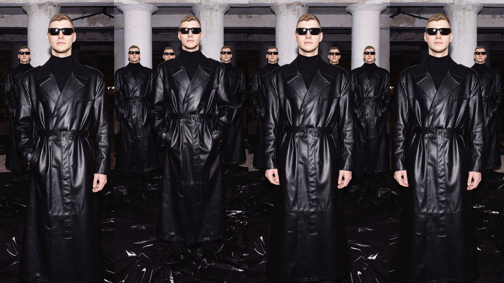

Fashion After Fabric / Parallel Vision
Ëlorian
03 / Inhabitant Study
Lotus 2063
Repetition becomes identity. One figure returns through leather, posture and control until the uniform behaves like an archival system.
One body. Multiple states.

The Uniform
A long leather silhouette held in strict proportion. Identity becomes an archival constant.

Archive / Lotus 2063
A Uniform for Repetition.
The figure returns without variation. Leather, posture and architecture form a single controlled record.
One Body → Multiple States
Uniform → Persona
Image → Archive